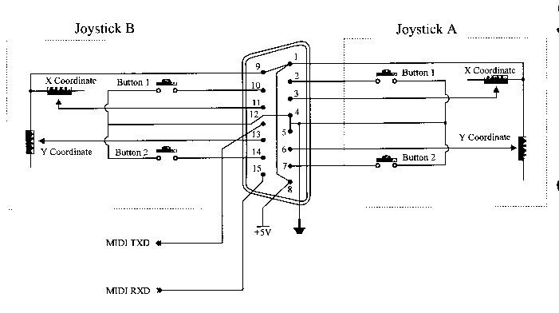
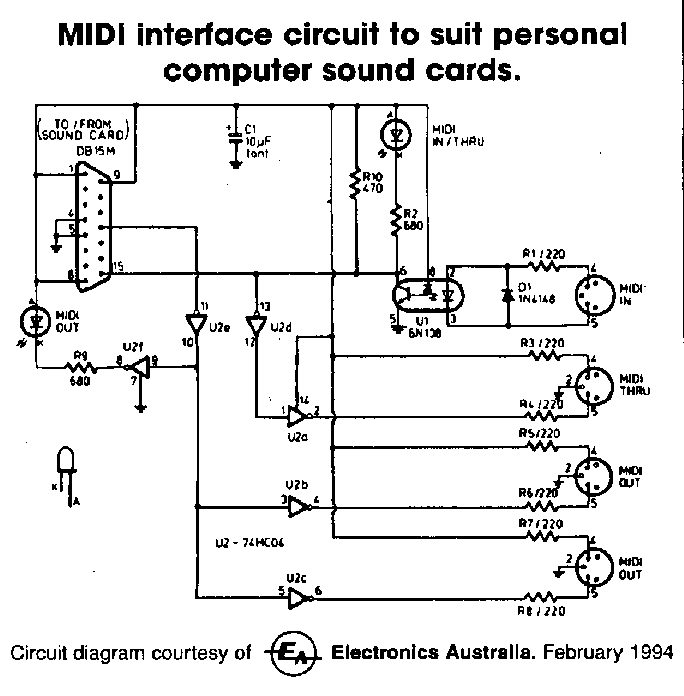

Some Games port hardware have problems with drift as the capacitors used in the timers (usually 0.01uF) are not of sufficient stability. These capacitors should be plastic type not ceramic.
The standard Games connector is a DB15S socket on the back of the computer and due to the connections to this plug only one joystick can be used when a "standard" joystick is used. If we wish to connect two joysticks we usually have to use a "Y" cable that makes the second joystick port available for connection to a second joystick.
| Pin | Used for | Notes |
|---|---|---|
| 1 | Plus 5 Volt | |
| 2 | Joystick 1 | Button A |
| 3 | Joystick 1 | X coordinate |
| 4 | Ground | |
| 5 | Ground | |
| 6 | Joystick 1 | Y coordinate |
| 7 | Joystick 1 | Button B |
| 8 | Plus 5 Volt | |
| 9 | Plus 5 Volt | |
| 10 | Joystick 2 | Button A |
| 11 | Joystick 2 | X coordinate |
| 12 | Midi out or ground | |
| 13 | Joystick 2 | Y coordinate |
| 14 | Joystick 2 | Button B |
| 15 | Midi in or Plus 5 Volt |
The Potentiometers making up the X and Y coordinate controls are wired back to the Plus 5 volt and the "Fire Buttons" switch to ground. The potentiometers are usually 150K linear potentiometers

Important: When the games port was first designed Midi devices did not exist. When early sound cards started providing a games port, the same connector was also used to provide a Midi interface. This meant two of the pins, pins 12 and 15, had to be assigned to the Midi interface rather than to providing ground and +5 volt as they originally did.
Most joysticks you buy are wired to pins 1,2,3,4,5,6 and 7 which means only one joystick can be connected to the games port. No provision is made to use the second joystick port on pins 9,10,11,13 and 14.
This can be overcome by using a "Y" cable that brings the second joystick connections out to the pins 1,2,3,4,5,6 and 7 of another DB15 connector. This allows two joysticks to be connected to the DB15S connector found on the back of most DOS computers. Note due to the addition of the Midi interface, pins 12 and 15 on the second joystick side of the connector are not used to connect the joystick. The ground (4 and 5) and +5 volt (1 and 8) pins on the other side are used instead.
Games port cards are available that have two DB15S connectors on the back and these are wired such that two "standard" joysticks can be plugged into the card without the "Y" cable. These cards can be used to add a Games port to the few DOS computers that do not come with the Games port fitted.
We have already said modern sound interface cards also provide a Games Port and a MIDI interface via the same connector. When installing a sound interface card in a computer that already had a Games Port provided by an I/O card or the system board, you must turn one of the Games Port interfaces off. It is good practice to cover the DB15 connector of the unused Games Port so the user does not plug into the wrong socket. The Games Port interface on sound cards can usually be disabled and this is done either through the cards setup software or sometimes via a jumper on the card.

| Back to the PC and its I/O Ports | Back to the opening index | Book two index |
| The common I/O port assignments | The PCs Parallel ports | The PCs Serial (Comms) ports |